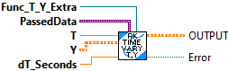

Performs 4th order Runge-Kutta integration of dx/dt = f( t, matrix y) for dt.
Inputs:
- Func_T_Y_Extra -- A strictly typed LabVIEW reference to a function to integrate as a function of matrix T, Y, and the extra passed data
- PassedData -- This is a variant that can be used to pass additional data to the function if needed. The data must be packed into the variant in the specific way expected by the function.
- T -- The initial value of T
- Y -- The initial value of Y.
- dT -- The time over which to integrate
Outputs:
- OUTPUT -- The integration of dx/dt = f(t, y) for dt.
- Error -- If TRUE, an error occured.